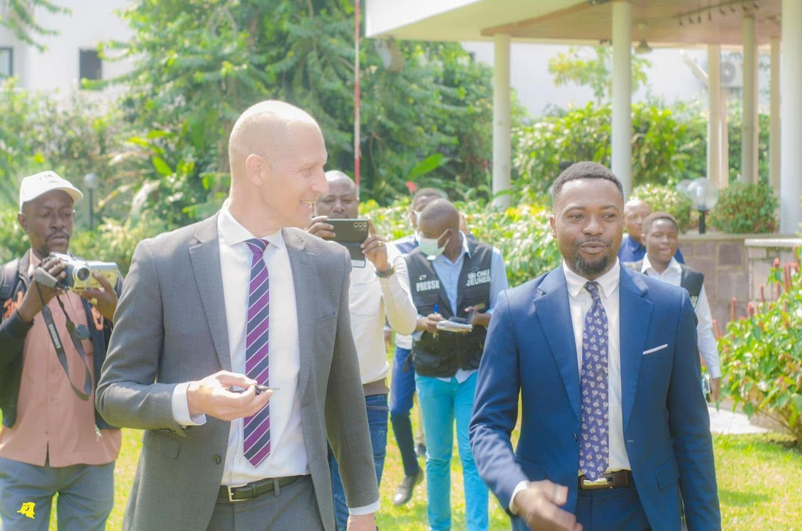
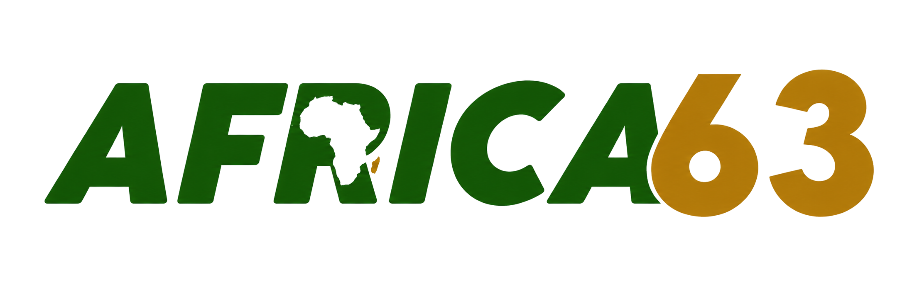
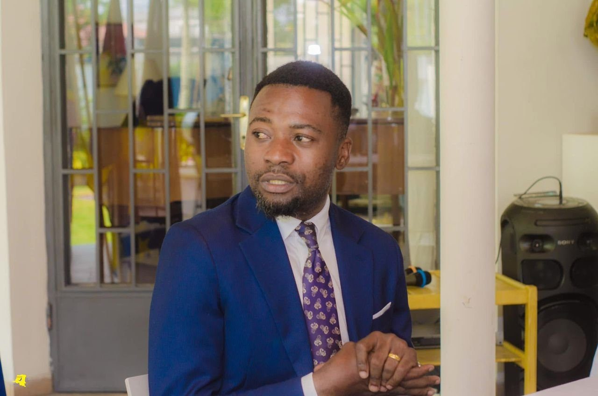
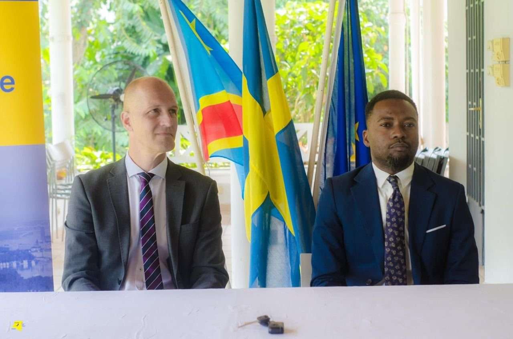
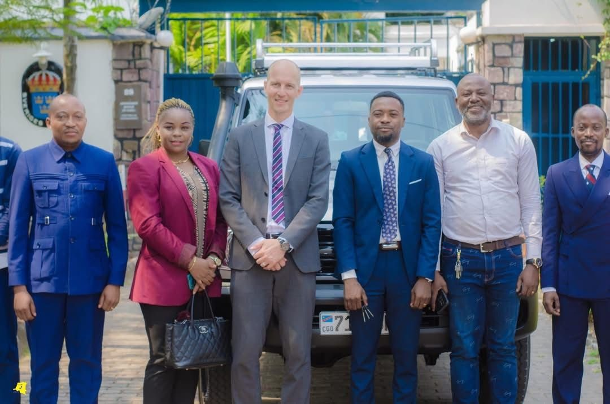

Arrival


Africa 63 measures its work not in noise, but in outcomes — partnerships built, institutions strengthened, and trust earned across the public and private sectors.
Kinshasa, Democratic Republic of the Congo — June 2022. A partnership to put young people at the centre of governance for sustainable development.




Africa 63 supported the partnership between the Embassy of Sweden and LYREC — a platform bringing together civil-society youth organisations across the Democratic Republic of the Congo. The collaboration was designed to strengthen youth participation in governance, deepening the role young citizens play in shaping public decisions and sustainable development.
Delivered under the LYREC–LSU partnership — alongside the National Youth Council of Sweden — the engagement provided the platform with the means to extend its work into the field. With this support, LYREC was equipped to reach communities across Central Congo, Kwilu, and Central Kasaï, carrying citizen engagement in public governance well beyond the capital.
The engagement reflects how Africa 63 works: convening credible partners, structuring the collaboration, and ensuring the outcome serves the communities at its centre — durable participation, stronger institutions, and trust that outlasts any single project.
The best work in public affairs is often the quietest — a partnership that holds, an institution that grows stronger, a community that is finally heard.
Bring Africa 63 a project, a partnership, or a mandate. We'll bring the structure, the relationships, and the discipline to deliver it.